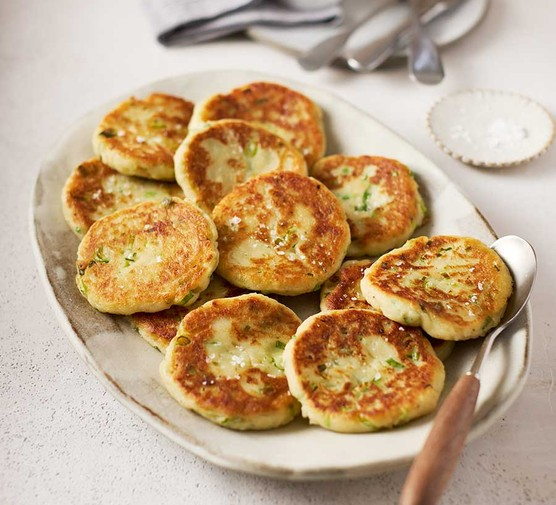

POTATO CAKES

Potato cakes : put your leftover mashed potatoes to good use with this top rated potato cake recipe
These potato cakes are simple and quick to make with only a few ingrediants and go great with any meal.
Serve the potato cakes as a side dish with a dollop of sour cream. You can also balance the savory recipe with a sweet homemade applesauce. Fresh chives or green onions will add a burst of flavor and color.
Ingredients:
- 2 cups mashed potatoes
- 1 cup all purpose flour
- 1 onion, diced
- 1 egg
- 1/2 teaspoon ground black pepper
- 1/2 teaspoon salt
- 1/2 cup vegetable oil
Steps:
- Mix mashed potatoes, flour, onion, egg, black pepper, and salt in a bowl until well combined, similar to a batter consistency.
- Heat vegetable oil in a skillet over medium heat.
- Drop 4-inch circles of batter into the hot oil.
- Cook until golden brown, about 4 to 5 minutes per side.
- Drain on paper towels.
- Repeat with any remaining batter.